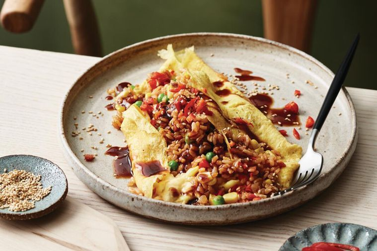

Omurice

Fried rice omelette
Fluffy, delicious omelette with rice. One that will make the Japanese queue for it!
Ingredients
- 3 tsp Vegetable oil
- 50g Bacon, chopped
- 1 Small onion, finely chopped
- 1 cup Leftover cooked sushi rice
- 2/3 cup (80g) Frozen corn and pea mix
- 1 tbs Tomato sauce
- 3 tsp Soy sauce
- 6 Eggs
- 2 tsp Milk
- Tonkatsu sauce, toasted sesame seeds and finely chopped and sliced red chilli, to serve
Steps
- Heat 1 tsp oil in a large frypan over medium-high heat. Cook bacon, stirring occasionally, for 4 minutes or until golden.
- Add onion and cook, stirring, for 3 minutes or until softened.
- Add rice and vegetables and stir-fry for 2-3 minutes until warmed through. Add tomato and soy sauce and stir-fry for 1 minute or until well combined. Cover to keep warm.
- Whisk eggs and milk in a large bowl until smooth. Heat a medium non-stick frypan over high heat until very hot. Add 1 tsp oil and swirl to coat pan. Pour half the egg mixture into the hot pan and immediately whisk egg mixture with 2 chopsticks in a small circular pattern until there is a thin base of cooked egg but remaining egg is still slightly runny. Remove from heat and slide out onto a serving plate. Spoon half the rice and vegetable mixture along centre, then fold egg up over slightly to cover.
- Repeat to make a second omelette. Drizzle with tonkatsu sauce, sprinkle with sesame seeds and chilli, and serve.